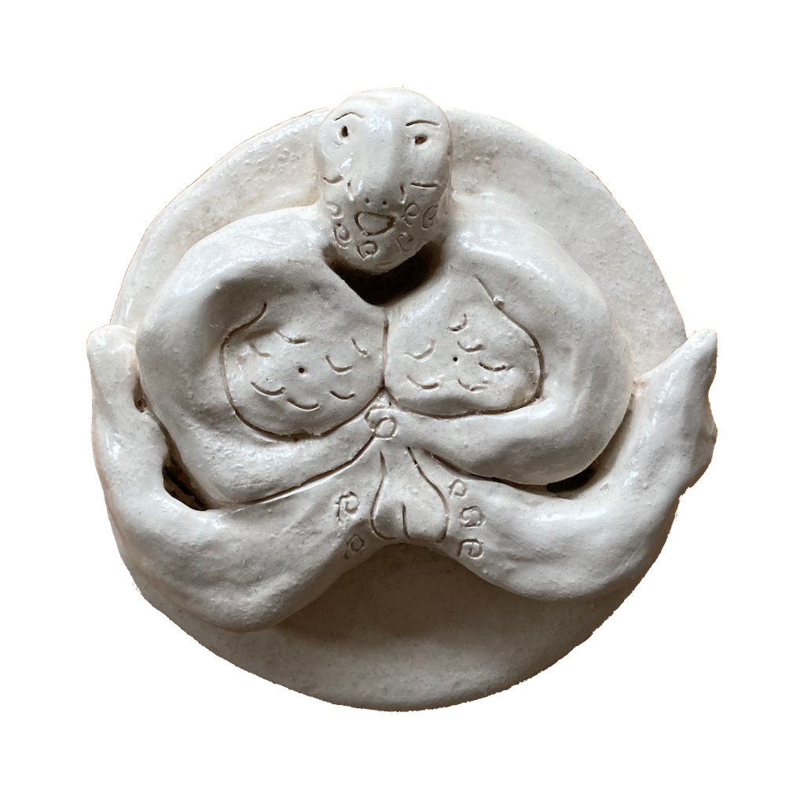
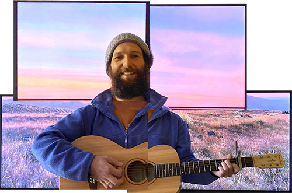

Living Yourself
- Living Yourself
- i can't keep up with Myself
- i know how the Earth Feels
- Magic Leaf
- Played with the Bugs
- Crye 4 Help
- my God is a Wild Animal
- my Heart explodes like a Dandelion
- the Primal Principle
- Heart of Dirt
- Hopeful Heaves
- Flower in a Tyre Track
- new Techniques
- i'm only going Naked from now on
- ...& then i became Me
download the mp3s @ 320kbps
i wrote this album while my heart bounced along the bountiful shores of this world, and i felt my body and mind inflate and deflate around it's pleasings,
kinda like the tide,
kinda like the seasons.
melodies drifted out of me as i walked paths between the trees of ancient woodlands, and reaffirmed themselves in the bubbling glow of new companionship.
everyone i've shared time with and everything i've shared space with seeps into me and fills a new part of my being.
this is my attempt to express the interweaving joy and sorrow that defines my human experience, in the surest terms that i am able.
kinda like the tide,
kinda like the seasons.
melodies drifted out of me as i walked paths between the trees of ancient woodlands, and reaffirmed themselves in the bubbling glow of new companionship.
everyone i've shared time with and everything i've shared space with seeps into me and fills a new part of my being.
this is my attempt to express the interweaving joy and sorrow that defines my human experience, in the surest terms that i am able.

thanks my loves